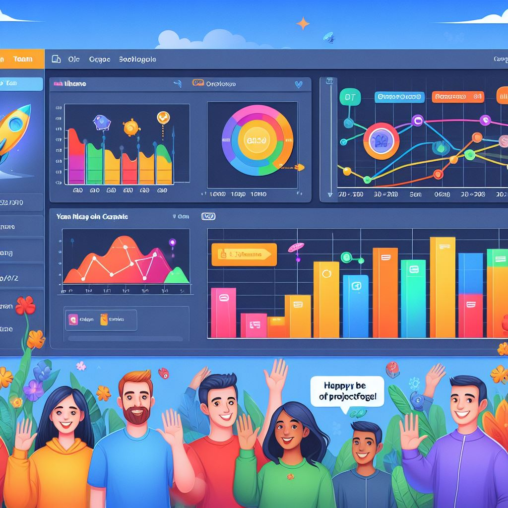
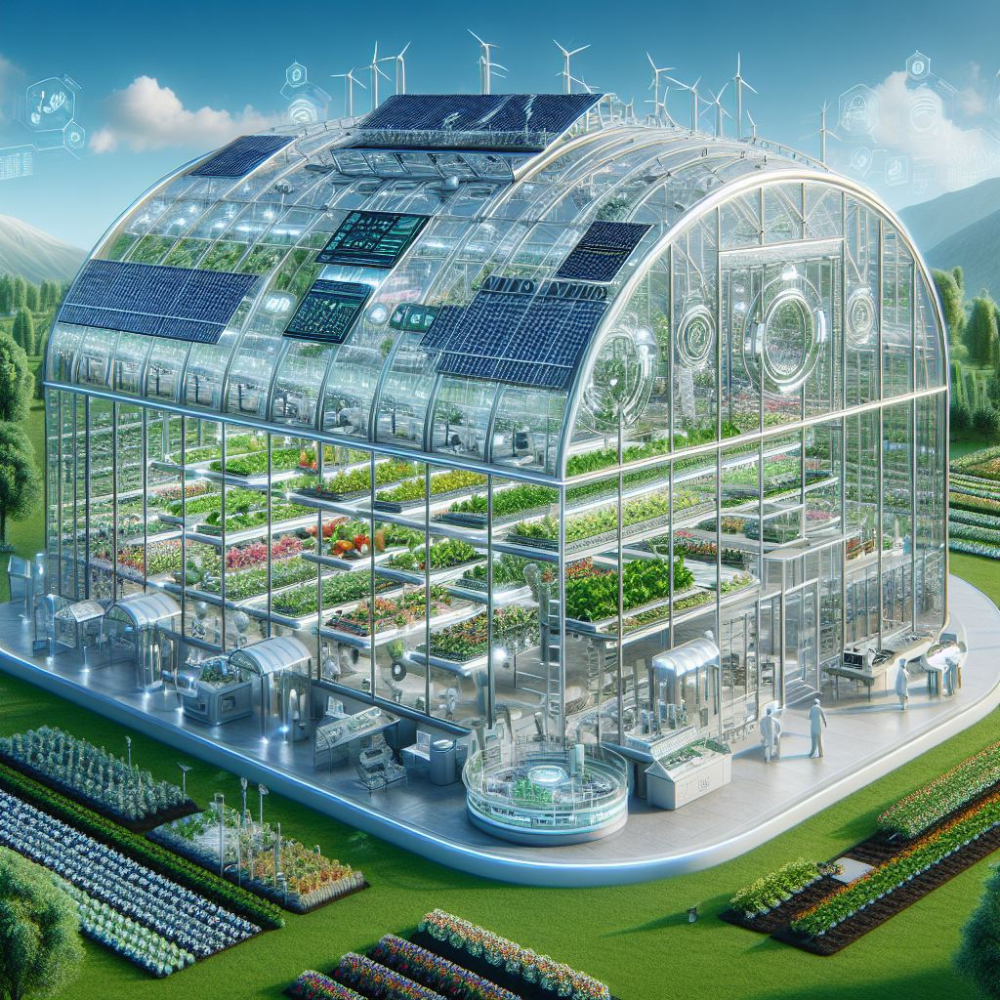
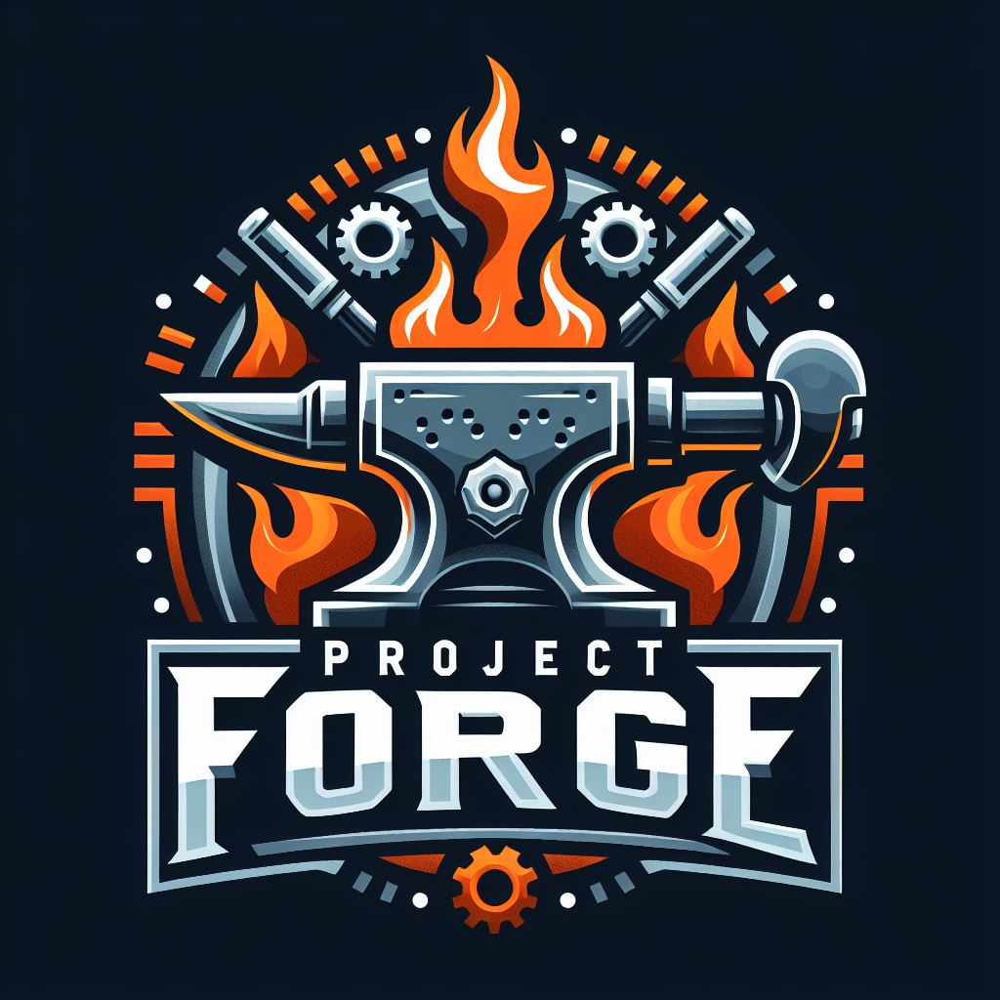

Hi! I'm Christian Bobadilla.
About Me
Hello! I'm Christian Bobadilla, an experienced backend developer with a versatile skill set spanning multiple programming languages and technologies. With a strong foundation in languages like C++, C#, Java, Python, and PHP, I specialize in architecting and implementing backend systems for a variety of applications.
My expertise extends to frameworks such as ASP.NET, Android Studio, and Django, where I leverage their capabilities to develop robust and scalable solutions tailored to client requirements. I have a proven track record of designing efficient data access layers, implementing complex business logic, and integrating backend systems with various databases.
In terms of database management, I'm proficient in SQL Server, MySQL Workbench, and phpMyAdmin, where I've designed schemas, optimized queries, and ensured data integrity across diverse projects. Additionally, I have experience working with NoSQL databases like Firebase, enabling me to develop real-time data-driven applications with ease.
Beyond backend development, I have a solid understanding of front-end technologies like JavaScript, HTML, and CSS, allowing me to collaborate effectively on full-stack projects. My comprehensive skill set and experience across the software development lifecycle make me a valuable asset to any team.
Let's connect and leverage my expertise to bring your projects to fruition!
Services
Backend Development
As a backend developer, I offer expertise in designing, developing, and maintaining robust backend systems tailored to your specific needs. From database management to business logic implementation, I ensure seamless performance and scalability for your applications.
Full-Stack Development
With proficiency in both frontend and backend technologies, I provide comprehensive full-stack development services. From user interface design to server-side logic, I deliver end-to-end solutions that meet your project requirements and exceed expectations.
Database Management
Effective database management is crucial for the success of any application. I offer expertise in designing database schemas, optimizing queries, and ensuring data integrity to maximize performance and reliability of your database-driven applications.
Skills
C++
Python
Java
SQL
Projects
Smart Greenhouse
The SmartGreenhouse project is a pioneering agricultural initiative that merges advanced technology with traditional greenhouse cultivation methods, now extended to mobile platforms. It optimizes plant growth and resource management through features like automated climate control, smart irrigation, and predictive analytics. Mobile capabilities enable remote monitoring and control, empowering farmers to manage operations from anywhere. Renewable energy integration and crop monitoring enhance sustainability, while scalability ensures adaptability to different needs. Ultimately, SmartGreenhouse fosters higher productivity, resource efficiency, and environmental stewardship in greenhouse agriculture.
ProjectForge
ProjectForge is a robust project management application developed using C# with Windows Forms for the user interface and SQL Server as the backend database. It provides a comprehensive solution for planning, executing, and monitoring projects effectively. The user interface is designed to be intuitive, allowing users to create projects, manage tasks, allocate resources, track progress, and generate reports seamlessly. The backend logic, implemented in C#, handles business rules, data manipulation, and integration with the SQL Server database. A data access layer ensures efficient database interactions and separation of concerns. ProjectForge offers features such as collaborative task management, document sharing, progress tracking, and customizable reporting. It is scalable, accessible from any device with an internet connection, and supports integration with other productivity tools. Overall, ProjectForge empowers teams and organizations with the tools they need to achieve project success efficiently and effectively.